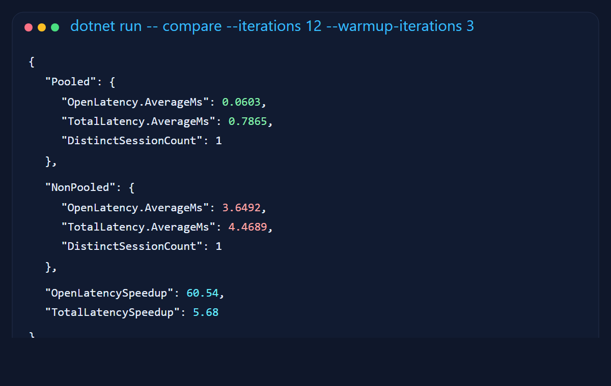
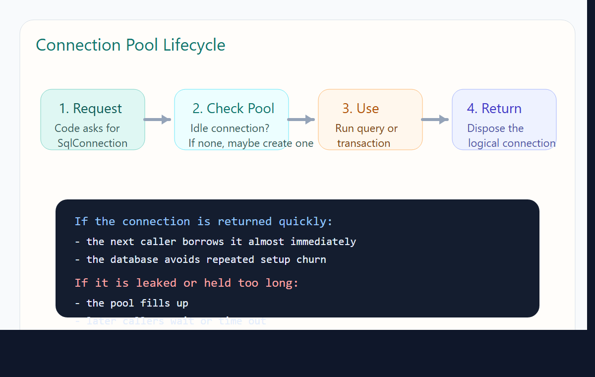
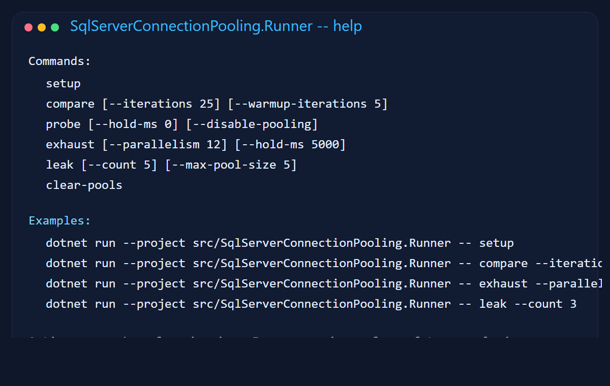
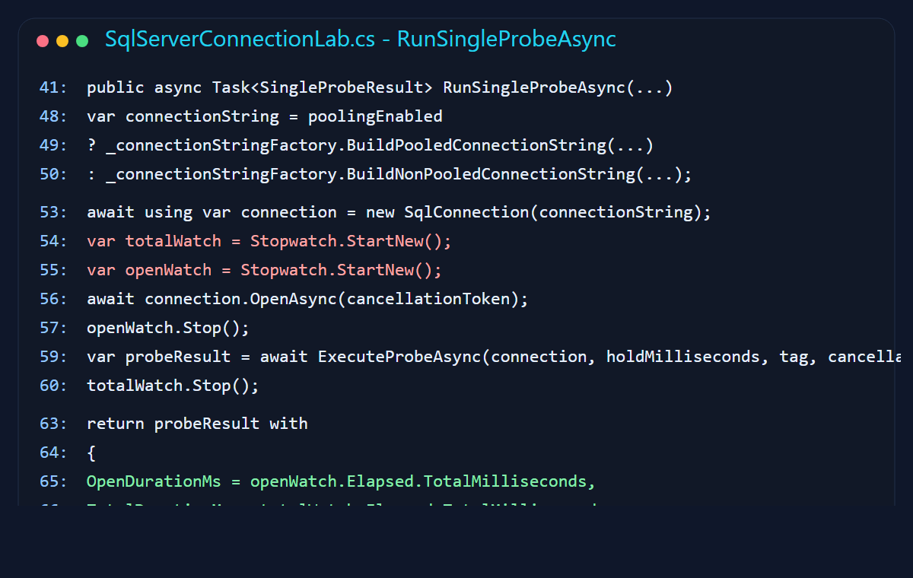
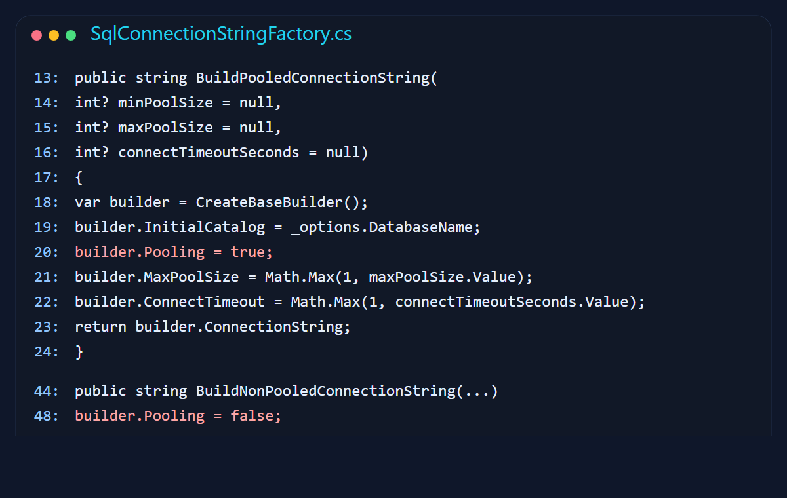
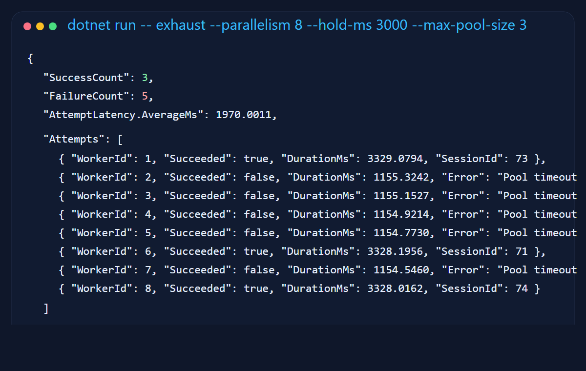
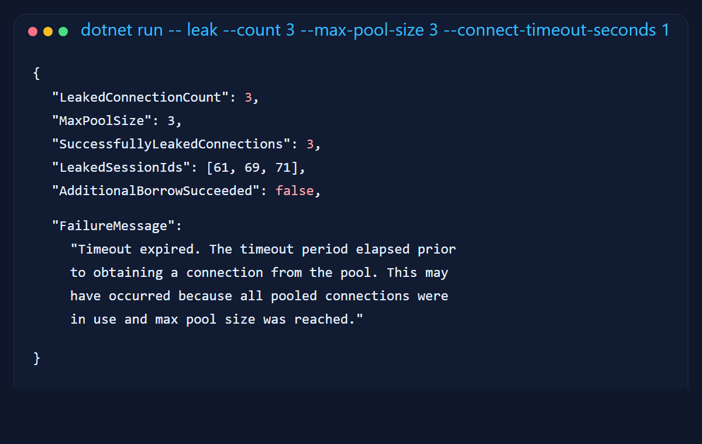
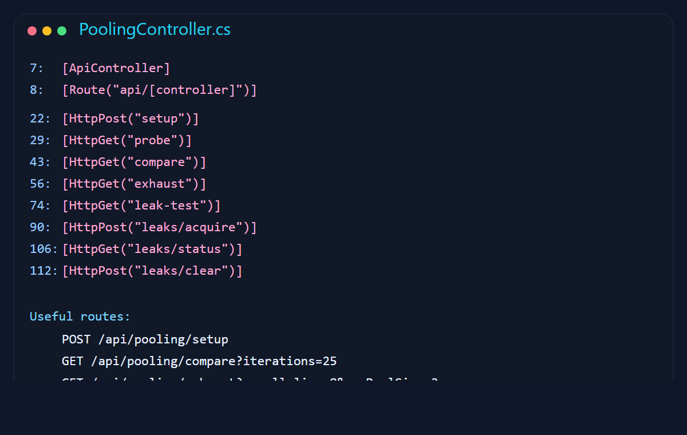

Why I built a lab instead of another definition
Connection pooling is one of those topics everybody "knows," right up until production gets weird. Then suddenly we are all rediscovering that opening a SQL connection is not just a polite method call. It is network setup, authentication, session creation, and a small amount of database ceremony that you absolutely notice once you do it over and over.
I wanted the blog post to show the operational trade-offs, not just the glossary entry. That meant a tiny lab with real numbers, failure cases, and enough control to answer useful questions like: what happens when the pool fills up, what a leak looks like, and why increasing Connect Timeout is sometimes just putting a nicer frame around the same fire.
1. Opening a fresh connection is the expensive part
The first thing I wanted was a comparison I could point to without waving my hands. The runner measures open latency and total round-trip time for the same database probe with pooling enabled and disabled.
On my machine, the pooled open averaged about 0.06 ms. The non-pooled open averaged about 3.65 ms. That is roughly a 60x difference on the open itself. The total request path was still about 5.7x faster. That is the sort of gap that quietly turns into throughput problems when traffic stops being polite and starts being real.
Opening a new connection for every request is a bit like restarting your car at every red light because technically it does get you moving again. It is just not a habit I would recommend.

2. What the pool is actually doing
The driver keeps a pool keyed by connection-string shape. When your code asks for a connection, it tries to borrow an idle one first. If no idle connection is available and the pool is below Max Pool Size, it creates another. When your code disposes the connection, the underlying physical connection is usually returned to the pool rather than torn down.
That return step is the whole game. If you forget it, the pool cannot help you. A leaked connection is not "still there somewhere." It is actively occupying a seat at the table. Enough of those and the rest of your app stands outside holding a plate.

3. I gave myself a boring little lab on purpose
The sample is split into a core library, a console runner, and a small ASP.NET Core API. The runner is the easiest place to start because it exposes the experiments as plain commands instead of hiding everything behind a web app and several tabs of optimism.

The core measurement method is equally direct. Open the connection, time it, run a small stored procedure, and return the observed timings. That gave me a clean way to compare behaviors without accidentally benchmarking a pile of unrelated code.

4. Tuning knobs are only helpful if you respect the consequences
I wrapped connection-string creation so the sample could flip pooling on and off, cap the pool size, and tighten connect timeout without playing string concatenation roulette.

There are three settings people usually touch first:
Max Pool Size: too low and callers queue or time out under normal load; too high and you push more concurrency toward the database than it can actually handle.Connect Timeout: raising this does not fix blocking, deadlocks, or slow queries. Sometimes it just gives the problem more time to ruin your afternoon.Min Pool Size: useful if you want warm connections during steady traffic, but it also means you are choosing to keep some database capacity reserved even when the app is quiet.
I try to treat these like capacity planning inputs, not magic charms. A bigger pool is not automatically mature engineering. Sometimes it is just bigger denial.
5. Pool exhaustion looks exactly like you think it does
To force exhaustion, I ran eight concurrent requests with a Max Pool Size of three and held each successful connection for three seconds. That is basically the software version of opening a supermarket with three checkout lanes and then acting surprised when eight carts appear at once.
The result was clean and useful: three requests succeeded, five timed out waiting for a slot, and the failures clustered around the one-second connect timeout. This is the failure mode people often meet in production after a long-running transaction or a slow query quietly monopolizes a few pooled connections.

6. Connection leaks are the boring disaster
My favorite part of the sample is the leak scenario because it fails in such an unglamorous, realistic way. I intentionally hold three connections open with a pool size of three, then try to borrow one more. The fourth request times out exactly the way a real leak-driven incident does.
Connection leaks are rarely cinematic. They do not throw confetti. They just slowly turn healthy request paths into timeout factories. By the time somebody says "the database seems a little slow," the real problem is often that the application stopped returning its rented chairs.

7. Database restarts are where your assumptions get tested
A pool is not a shrine to immortal connections. If SQL Server restarts or fails over, a client may still be holding onto physical connections that are no longer useful. In practice, the application has to survive that first awkward borrow after the database comes back with a new haircut and a different attitude.
The sample exposes setup and control endpoints through a small API, and it includes ClearAllPools support for the lab. In a real system, I would combine proper disposal, transient retry at the operation boundary, and health checks that do not confuse "TCP exists" with "the database is genuinely ready for work."
I also try hard not to bury failover handling inside giant retry blankets. Retrying a clean idempotent read is one thing. Retrying half a transaction because the app got spooked mid-flight is how incident reports acquire extra paragraphs.

With pooling vs without pooling
The exact latency numbers will move around depending on machine, network, driver version, and whether your laptop is currently trying to compile, scan for malware, and update Teams at the same time. The pattern is the interesting part.
| Feature | Without Pooling | With Pooling |
|---|---|---|
| Open latency | Repeated setup cost on every borrow | Usually a fast handoff from the pool |
| Throughput under concurrency | Drops sooner because every request pays connection setup | Higher, provided callers return connections promptly |
| Database load | More churn from connection creation and teardown | More stable once the warm pool settles in |
| Failure mode | Slow request path and avoidable CPU/network cost | Pool exhaustion if connections are held too long or leaked |
| Operational lesson | You are paying for unnecessary ceremony | You still need discipline around disposal, timeouts, and transaction length |
How to run the sample
The project lives in sqlserver-connection-pooling. Start with the console runner, because it gives you the shortest path from command to observable behavior.
cd sqlserver-connection-pooling dotnet build # create the demo database and stored procedure dotnet run --project src/SqlServerConnectionPooling.Runner -- setup # compare pooled vs non-pooled opens dotnet run --project src/SqlServerConnectionPooling.Runner -- compare --iterations 25 # force pool exhaustion dotnet run --project src/SqlServerConnectionPooling.Runner -- exhaust --parallelism 8 --hold-ms 3000 --max-pool-size 3 --connect-timeout-seconds 1 # simulate a leak dotnet run --project src/SqlServerConnectionPooling.Runner -- leak --count 3 --max-pool-size 3 --connect-timeout-seconds 1
If you want an HTTP surface instead, run the API and use the endpoints exposed by PoolingController. That is handy when you want to hit the demo from a browser, a load tool, or the future version of yourself who forgot how your own sample works.
Final thought
The part I like about connection pooling is that it rewards plain engineering habits. Dispose what you borrow. Keep transactions short. Size the pool according to actual demand. Do not use timeouts as decorative optimism. None of that is glamorous, but glamorous systems are often the ones writing apology emails later.
If I were explaining this to a junior engineer, I would probably say it this way: pooling is not a speed hack, it is resource etiquette. Your app is sharing an expensive thing. Treat it like a shared kitchen, not like your own private fridge door that can be opened forty times in ten minutes just because technically the hinge still works.